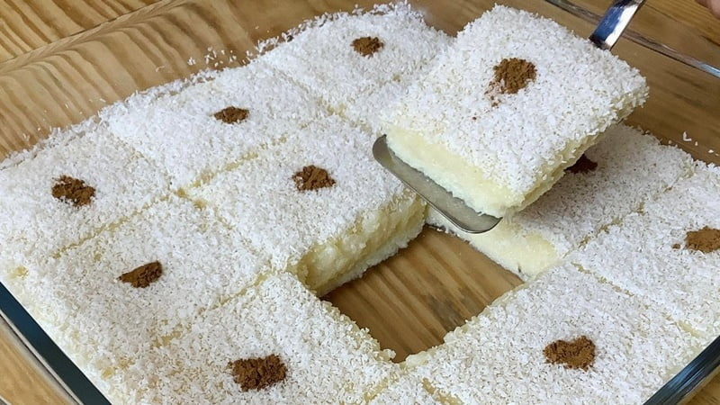

Sütlü İrmik Tatlısı Tarifi
Malzemeler
- 1 litre süt
- 1,5 su bardağı şeker
- 1 su bardağından bir parmak eksik irmik
- 1 tatlı kaşığı tereyağı
- 1 paket vanilya
Süslemek için
Yapılışı
- Uygun bir tencerenin içine sütü, şekeri ve irmiği alıp sürekli karıştırarak kaynayıp kıvam alıncaya kadar pişirelim.
- Yeterince kıvam aldıktan sonra tereyağını ve vanilyayı ilave edip eriyene kadar karıştıralım.
- Borcamın içini su ile çalkalayalım ve muhallebimizi içine döküp eşit bir şekilde yayalım.
- Daha sonra dinlenen tatlının üzerine bolca Hindistan cevizi serpelim ve dilimleyelim.
- Son olarak üzerini tarçın ile süsleyelim ve servis edelim.
- Afiyet olsun!